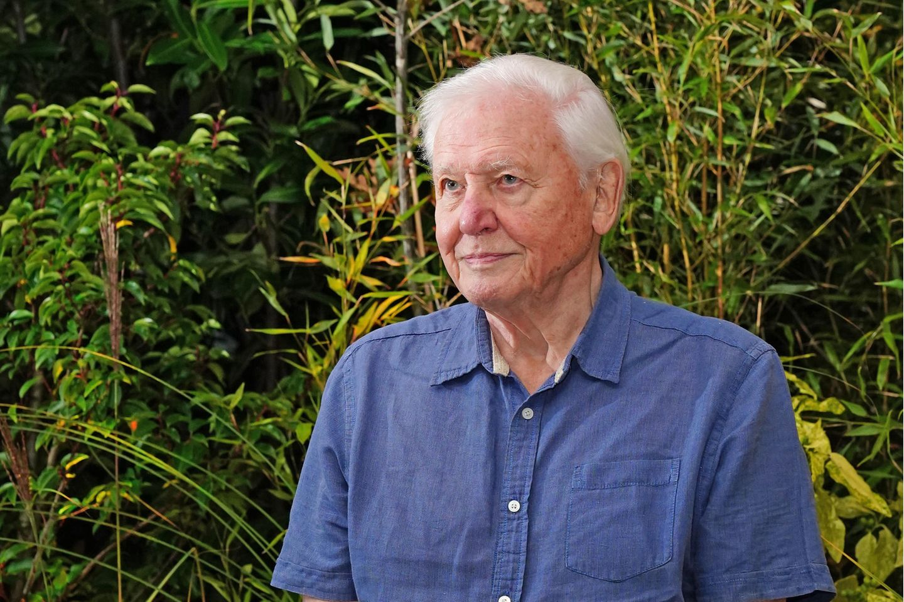

V
Warum Zoos wichtig sind
„Zoos sind Tiergefängnisse.“
Moderne Zoos bieten artgerechte, sichere Lebensräume für bedrohte Arten.
„Tiere gehören in die Wildnis.“
Viele Arten hätten ohne Zoos keine überlebensfähige Wildpopulation mehr.
„Zoos dienen nur der Unterhaltung.“
Sie leisten aktive Forschung, Bildung und Arterhaltungsarbeit weltweit.
„Nachzuchten landen nicht in der Natur.“
Wiederauswilderung braucht Zeit – Zoos bereiten Populationen gezielt vor.
Stimmen für Zoos
„Nur wer schützt, kann bewahren.“

David Attenborough
Dokumentarfilmer
Dokumentarfilmer
„Artenschutz beginnt mit Verständnis.“
Jane Goodall
Verhaltensforscherin
Verhaltensforscherin